製作日期：2026-10-23。狀態：圖像與文件已完成；實際影片待生成。
風格與主題
藍白金箔感流動繪畫，深靛藍點綴、可見不透明筆觸、曲線、大量乾淨留白。 主題：自然探索、彈性、與未知合作
角色
青序（少女／青年）與墨游（動物）。
劇情大綱
青序在白紙世界畫一條筆直的河，河道卻被金色岩石擋住。墨游沿石邊游出弧線。他放下直尺，跟著魚的路徑落筆，原來的障礙成了河灣中的小島。
劇情要點
畫直河 → 金石擋路 → 錦鯉沿邊轉彎 → 放下直尺 → 曲線繞出河灣 → 河道延伸成新風景
場景
留白紙原、筆觸生出的藍白河谷、金箔感岩石與新河灣；片頭為青年趴在未畫河的紙原上與小水池的高空俯景，片尾為下游的白色拱洞。
情緒方向
留白、流動、靜謐；轉彎帶來更寬的視野。
Style
Lyrical blue-and-white fantasy illustration, selective deep indigo and mottled gold-leaf-like accents, visible opaque-paint brushwork and irregular color layers, flowing curves, generous clean negative space, airy and quiet.
原始風格參考：../../09.jpg，只提取色彩、線條、構圖與肌理，不複製原作品角色。
中文大標題
河流不走直線
English title
Rivers Find Their Way
中文副標題
轉個彎，也能走向遠方
English subtitle
A bend can still lead you onward.
中英文以語意、節奏與畫面情緒對應，避免逐字硬譯。所有分鏡小標題為 4–5 個中文字，中文字幕為 6–10 字；字幕另外剪輯疊加，不燒入分鏡圖。
青序
青年繪圖師青序，20歲、168公分、約7頭身，靛藍短捲髮、藍灰眼，紙白交領層疊短袍、少量藍金筆觸花紋與飄帶、靛藍窄腰帶、淡藍寬褲捲至小腿、赤腳。右手使用一支木柄深藍毛筆，左手原持一把無字直尺，放下後不再拿起。
墨游
藍白錦鯉墨游，全長50公分、正常魚身比例，白底，頭頂一塊靛藍斑、左側腹一大塊靛藍斑、尾柄一圈靛藍斑；少量金色碎斑、淡藍流動長鰭，正常雙胸鰭與單尾鰭，無腳、無翅膀，始終在水中。
角色四視圖是外觀的主要依據，體型表是身高比例的依據；同一人物不可逐鏡換臉、髮型、服裝配色，動物不可忽大忽小。僅依劇情改變明確指定的衣物與道具狀態。
魚的四視圖以魚類解剖方向表達：頭端正面、45度、側面、背側／尾端方向。全長以鼻尖至尾尖計，水中姿態仍依魚類比例；錦鯉全片不離水。05 放下直尺後，直尺留在原岸，不再出現在手中。
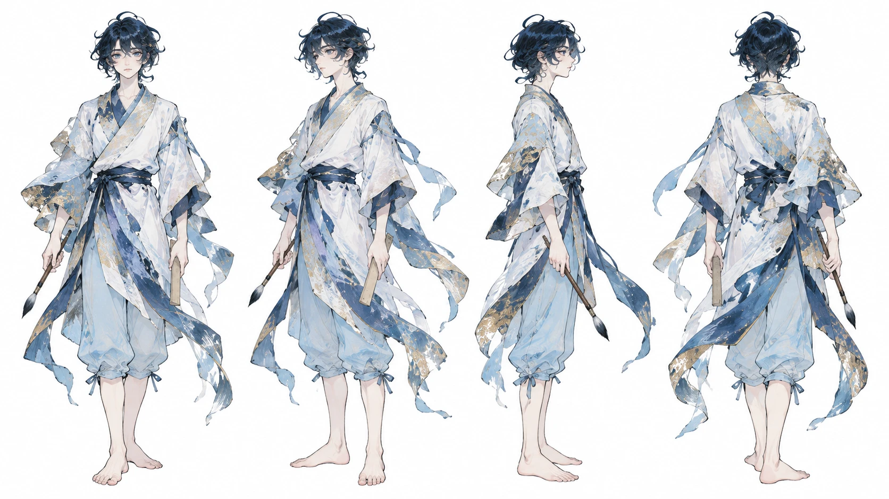
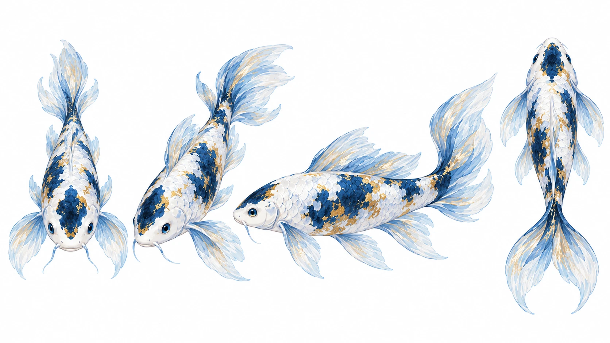
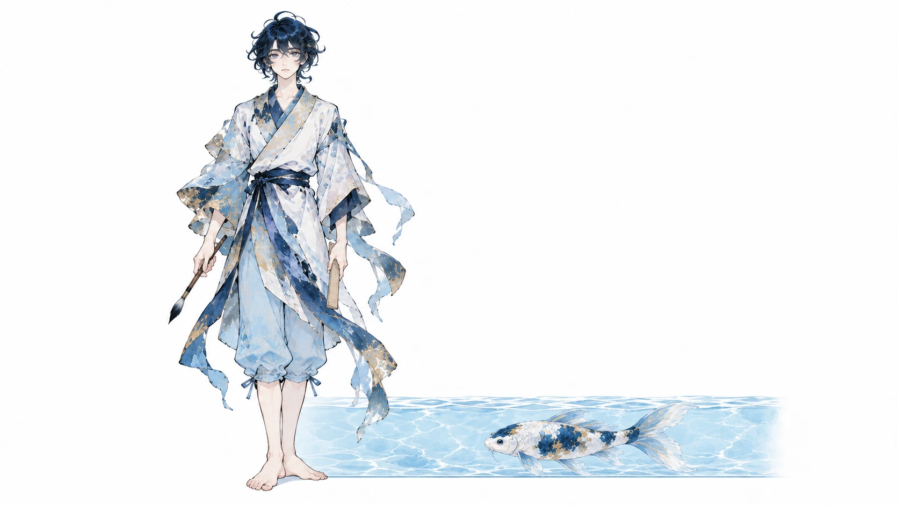
| 段落 | 時間 | 時長 |
|---|---|---|
| 獨立片頭 | 00–05 秒 | 5 秒 |
| 01 筆直的願望 | 05–10 秒 | 5 秒 |
| 02 金石擋住路 | 10–15 秒 | 5 秒 |
| 03 魚先轉個彎 | 15–20 秒 | 5 秒 |
| 04 看見另一條 | 20–25 秒 | 5 秒 |
| 05 放下那把尺 | 25–30 秒 | 5 秒 |
| 06 跟著水落筆 | 30–35 秒 | 5 秒 |
| 07 障礙成小島 | 35–40 秒 | 5 秒 |
| 08 踏進新河灣 | 40–45 秒 | 5 秒 |
| 09 留白向遠方 | 45–50 秒 | 5 秒 |
| 10 把心畫寬些 | 50–55 秒 | 5 秒 |
| 獨立片尾 | 55–60 秒 | 5 秒 |
Overhead wide shot｜A Straight Intention｜05–10 秒（5 秒）
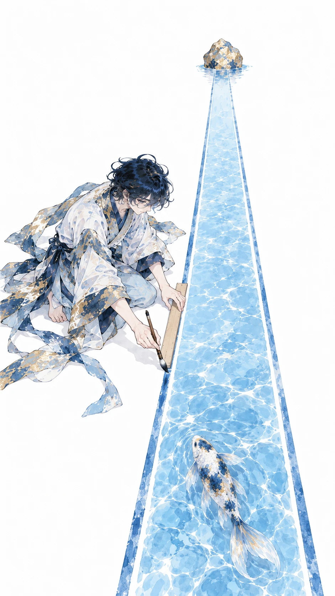
畫面描述｜中文
白紙原上，青序右手持筆、左手直尺沿河邊，已畫一段直淺藍河，墨游在起點水中，前方一塊金箔感岩石。
Frame description｜English
On a paper-white plain, Qingxu holds brush right and ruler left beside a straight shallow-blue river; Moyu swims at its beginning, a gold-leaf-like rock ahead.
Video Caption｜中文
我想畫一條筆直河
Video Caption｜English
I wanted a straight river.
圖像提示詞｜中文｜9:16
9:16直式，單一動畫分鏡，俯拍遠景。藍白金箔感流動繪畫，深靛藍點綴、可見不透明筆觸、曲線、大量乾淨留白。畫面：白紙原上，青序右手持筆、左手直尺沿河邊，已畫一段直淺藍河，墨游在起點水中，前方一塊金箔感岩石。角色一致性：青年繪圖師青序，20歲、168公分、約7頭身，靛藍短捲髮、藍灰眼，紙白交領層疊短袍、少量藍金筆觸花紋與飄帶、靛藍窄腰帶、淡藍寬褲捲至小腿、赤腳。右手使用一支木柄深藍毛筆，左手原持一把無字直尺，放下後不再拿起。 藍白錦鯉墨游，全長50公分、正常魚身比例，白底，頭頂一塊靛藍斑、左側腹一大塊靛藍斑、尾柄一圈靛藍斑；少量金色碎斑、淡藍流動長鰭，正常雙胸鰭與單尾鰭，無腳、無翅膀，始終在水中。角色設定/character_human.png 與角色設定/character_animal.png 固定造型，角色設定/character_scale.png 固定體型。只載入本鏡頭有出現的角色參考，無角色的物件特寫不加入角色。以本鏡頭指定的衣物與道具階段為準；不把完成後的狀態提早出現。不加文字、字幕、標誌、水印、第三個角色；不畫拼貼、分格或角色轉身表。不改臉型、髮型、衣色、動物花紋與比例；不增加肢體或道具。
Image prompt｜English｜9:16
Vertical 9:16, ONE animation storyboard frame, Overhead wide shot. STYLE: Lyrical blue-and-white fantasy illustration, selective deep indigo and mottled gold-leaf-like accents, visible opaque-paint brushwork and irregular color layers, flowing curves, generous clean negative space, airy and quiet. FRAME: On a paper-white plain, Qingxu holds brush right and ruler left beside a straight shallow-blue river; Moyu swims at its beginning, a gold-leaf-like rock ahead. CHARACTER LOCK: Qingxu, a 20-year-old male mapmaker, 168 cm, seven-head proportions; short indigo curly hair, blue-gray eyes, paper-white layered crossover short robe with sparse blue-gold brush patterns and flowing fabric strips, narrow indigo sash, light-blue trousers rolled to mid-calf, bare feet. One wooden dark-bristled brush in his right hand; one unmarked ruler initially in his left, laid down permanently during the story. Moyu, a blue-and-white koi, total length 50 cm with natural fish proportions; white body, one indigo crown patch, one large indigo left-flank patch, indigo tail-base band, sparse gold flecks and flowing pale-blue fish fins. Normal paired pectoral fins and one tail fin, no legs or wings; always submerged in water. Use character_human.png and character_animal.png for exact designs, character_scale.png for size. Load only the character references visible in this shot; do not add characters to object-only close-ups. The specific shot state takes priority: do not introduce later wardrobe or prop states early. No text, captions, logos, watermarks, extra characters, collage, panels or turnaround. No redesign, scale drift, extra limbs, duplicated props or photographic rendering.
影片提示詞｜中文｜5秒｜9:16
5秒，9:16，以上述分鏡圖為唯一首幀。藍白金箔感流動繪畫，深靛藍點綴、可見不透明筆觸、曲線、大量乾淨留白。白紙原上，青序右手持筆、左手直尺沿河邊，已畫一段直淺藍河，墨游在起點水中，前方一塊金箔感岩石。動作與運鏡：俯拍緩推，筆尖沿尺畫一小段直線，魚在既有水中輕擺尾。保持原圖角色、體型、場景位置與道具狀態，運動自然且小幅；最後0.5秒穩定收住。不要切鏡、變形、閃爍、憑空新增物件或生成文字；字幕於剪輯時另疊。
Video prompt｜English｜5 seconds｜9:16
5 seconds, vertical 9:16. Use the matching storyboard image as the sole first frame. Lyrical blue-and-white fantasy illustration, selective deep indigo and mottled gold-leaf-like accents, visible opaque-paint brushwork and irregular color layers, flowing curves, generous clean negative space, airy and quiet. On a paper-white plain, Qingxu holds brush right and ruler left beside a straight shallow-blue river; Moyu swims at its beginning, a gold-leaf-like rock ahead. MOTION AND CAMERA: Slow overhead push as the brush adds a short straight segment along the ruler; the koi gently moves its tail in existing water. Preserve the supplied designs, body scale, scene geography and prop state; small natural movement, settle for the final 0.5 second. No cuts, morphing, flicker, invented objects or generated text. Add captions during editing.
Medium close-up｜A Golden Obstacle｜10–15 秒（5 秒）
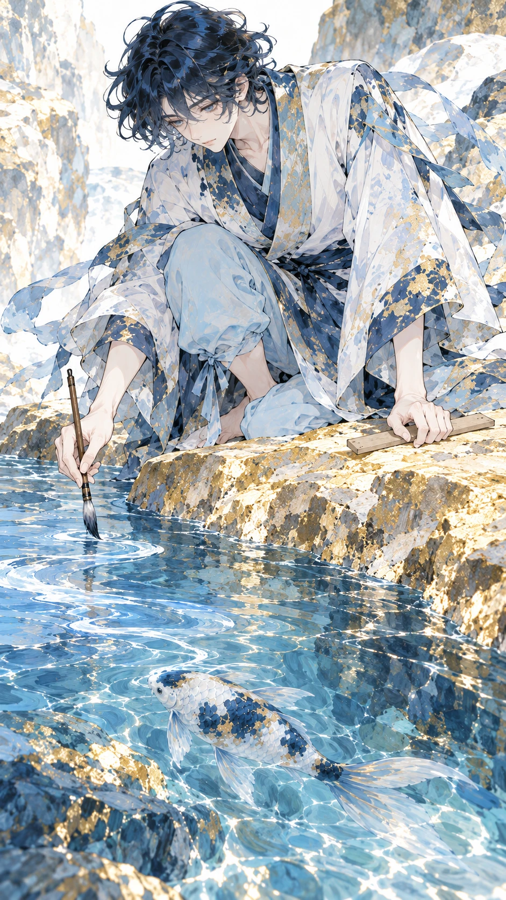
畫面描述｜中文
直河末端遇上金色岩石，水停在石前，青序筆尖懸住，直尺仍在左手；墨游在石前水中。
Frame description｜English
The straight river ends against the golden rock; Qingxu's brush pauses above it, ruler still left-handed; Moyu is submerged in the water before the rock.
Video Caption｜中文
前方忽然不肯讓路
Video Caption｜English
The way ahead will not yield.
圖像提示詞｜中文｜9:16
9:16直式，單一動畫分鏡，近景。藍白金箔感流動繪畫，深靛藍點綴、可見不透明筆觸、曲線、大量乾淨留白。畫面：直河末端遇上金色岩石，水停在石前，青序筆尖懸住，直尺仍在左手；墨游在石前水中。角色一致性：青年繪圖師青序，20歲、168公分、約7頭身，靛藍短捲髮、藍灰眼，紙白交領層疊短袍、少量藍金筆觸花紋與飄帶、靛藍窄腰帶、淡藍寬褲捲至小腿、赤腳。右手使用一支木柄深藍毛筆，左手原持一把無字直尺，放下後不再拿起。 藍白錦鯉墨游，全長50公分、正常魚身比例，白底，頭頂一塊靛藍斑、左側腹一大塊靛藍斑、尾柄一圈靛藍斑；少量金色碎斑、淡藍流動長鰭，正常雙胸鰭與單尾鰭，無腳、無翅膀，始終在水中。角色設定/character_human.png 與角色設定/character_animal.png 固定造型，角色設定/character_scale.png 固定體型。只載入本鏡頭有出現的角色參考，無角色的物件特寫不加入角色。以本鏡頭指定的衣物與道具階段為準；不把完成後的狀態提早出現。不加文字、字幕、標誌、水印、第三個角色；不畫拼貼、分格或角色轉身表。不改臉型、髮型、衣色、動物花紋與比例；不增加肢體或道具。
Image prompt｜English｜9:16
Vertical 9:16, ONE animation storyboard frame, Medium close-up. STYLE: Lyrical blue-and-white fantasy illustration, selective deep indigo and mottled gold-leaf-like accents, visible opaque-paint brushwork and irregular color layers, flowing curves, generous clean negative space, airy and quiet. FRAME: The straight river ends against the golden rock; Qingxu's brush pauses above it, ruler still left-handed; Moyu is submerged in the water before the rock. CHARACTER LOCK: Qingxu, a 20-year-old male mapmaker, 168 cm, seven-head proportions; short indigo curly hair, blue-gray eyes, paper-white layered crossover short robe with sparse blue-gold brush patterns and flowing fabric strips, narrow indigo sash, light-blue trousers rolled to mid-calf, bare feet. One wooden dark-bristled brush in his right hand; one unmarked ruler initially in his left, laid down permanently during the story. Moyu, a blue-and-white koi, total length 50 cm with natural fish proportions; white body, one indigo crown patch, one large indigo left-flank patch, indigo tail-base band, sparse gold flecks and flowing pale-blue fish fins. Normal paired pectoral fins and one tail fin, no legs or wings; always submerged in water. Use character_human.png and character_animal.png for exact designs, character_scale.png for size. Load only the character references visible in this shot; do not add characters to object-only close-ups. The specific shot state takes priority: do not introduce later wardrobe or prop states early. No text, captions, logos, watermarks, extra characters, collage, panels or turnaround. No redesign, scale drift, extra limbs, duplicated props or photographic rendering.
影片提示詞｜中文｜5秒｜9:16
5秒，9:16，以上述分鏡圖為唯一首幀。藍白金箔感流動繪畫，深靛藍點綴、可見不透明筆觸、曲線、大量乾淨留白。直河末端遇上金色岩石，水停在石前，青序筆尖懸住，直尺仍在左手；墨游在石前水中。動作與運鏡：固定鏡位，筆尖懸停，水面只有小漣漪，岩石不移動。保持原圖角色、體型、場景位置與道具狀態，運動自然且小幅；最後0.5秒穩定收住。不要切鏡、變形、閃爍、憑空新增物件或生成文字；字幕於剪輯時另疊。
Video prompt｜English｜5 seconds｜9:16
5 seconds, vertical 9:16. Use the matching storyboard image as the sole first frame. Lyrical blue-and-white fantasy illustration, selective deep indigo and mottled gold-leaf-like accents, visible opaque-paint brushwork and irregular color layers, flowing curves, generous clean negative space, airy and quiet. The straight river ends against the golden rock; Qingxu's brush pauses above it, ruler still left-handed; Moyu is submerged in the water before the rock. MOTION AND CAMERA: Locked shot: the brush pauses; only small ripples move, the rock stays fixed. Preserve the supplied designs, body scale, scene geography and prop state; small natural movement, settle for the final 0.5 second. No cuts, morphing, flicker, invented objects or generated text. Add captions during editing.
Close-up｜The Koi Turns｜15–20 秒（5 秒）
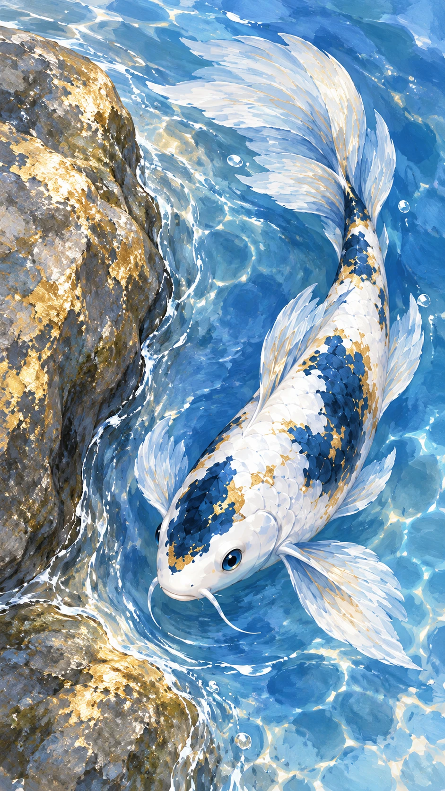
畫面描述｜中文
俯視墨游沿金石左側的細窄水邊轉身，白身靛藍固定斑清楚，水中弧線自然，無人臉。
Frame description｜English
Top-down close-up of Moyu turning along the narrow wet margin on the rock's left side; its white body and fixed indigo markings are clear, the curve entirely in water, no human face.
Video Caption｜中文
你卻輕輕轉了個彎
Video Caption｜English
You simply took a turn.
圖像提示詞｜中文｜9:16
9:16直式，單一動畫分鏡，特寫。藍白金箔感流動繪畫，深靛藍點綴、可見不透明筆觸、曲線、大量乾淨留白。畫面：俯視墨游沿金石左側的細窄水邊轉身，白身靛藍固定斑清楚，水中弧線自然，無人臉。角色一致性：藍白錦鯉墨游，全長50公分、正常魚身比例，白底，頭頂一塊靛藍斑、左側腹一大塊靛藍斑、尾柄一圈靛藍斑；少量金色碎斑、淡藍流動長鰭，正常雙胸鰭與單尾鰭，無腳、無翅膀，始終在水中。角色設定/character_human.png 與角色設定/character_animal.png 固定造型，角色設定/character_scale.png 固定體型。只載入本鏡頭有出現的角色參考，無角色的物件特寫不加入角色。以本鏡頭指定的衣物與道具階段為準；不把完成後的狀態提早出現。不加文字、字幕、標誌、水印、第三個角色；不畫拼貼、分格或角色轉身表。不改臉型、髮型、衣色、動物花紋與比例；不增加肢體或道具。
Image prompt｜English｜9:16
Vertical 9:16, ONE animation storyboard frame, Close-up. STYLE: Lyrical blue-and-white fantasy illustration, selective deep indigo and mottled gold-leaf-like accents, visible opaque-paint brushwork and irregular color layers, flowing curves, generous clean negative space, airy and quiet. FRAME: Top-down close-up of Moyu turning along the narrow wet margin on the rock's left side; its white body and fixed indigo markings are clear, the curve entirely in water, no human face. CHARACTER LOCK: Moyu, a blue-and-white koi, total length 50 cm with natural fish proportions; white body, one indigo crown patch, one large indigo left-flank patch, indigo tail-base band, sparse gold flecks and flowing pale-blue fish fins. Normal paired pectoral fins and one tail fin, no legs or wings; always submerged in water. Use character_human.png and character_animal.png for exact designs, character_scale.png for size. Load only the character references visible in this shot; do not add characters to object-only close-ups. The specific shot state takes priority: do not introduce later wardrobe or prop states early. No text, captions, logos, watermarks, extra characters, collage, panels or turnaround. No redesign, scale drift, extra limbs, duplicated props or photographic rendering.
影片提示詞｜中文｜5秒｜9:16
5秒，9:16，以上述分鏡圖為唯一首幀。藍白金箔感流動繪畫，深靛藍點綴、可見不透明筆觸、曲線、大量乾淨留白。俯視墨游沿金石左側的細窄水邊轉身，白身靛藍固定斑清楚，水中弧線自然，無人臉。動作與運鏡：固定俯拍，魚以小幅尾擺沿水邊前進半個身長，不離水。保持原圖角色、體型、場景位置與道具狀態，運動自然且小幅；最後0.5秒穩定收住。不要切鏡、變形、閃爍、憑空新增物件或生成文字；字幕於剪輯時另疊。
Video prompt｜English｜5 seconds｜9:16
5 seconds, vertical 9:16. Use the matching storyboard image as the sole first frame. Lyrical blue-and-white fantasy illustration, selective deep indigo and mottled gold-leaf-like accents, visible opaque-paint brushwork and irregular color layers, flowing curves, generous clean negative space, airy and quiet. Top-down close-up of Moyu turning along the narrow wet margin on the rock's left side; its white body and fixed indigo markings are clear, the curve entirely in water, no human face. MOTION AND CAMERA: Locked overhead shot: the koi advances half a body length with small tail strokes, never leaving water. Preserve the supplied designs, body scale, scene geography and prop state; small natural movement, settle for the final 0.5 second. No cuts, morphing, flicker, invented objects or generated text. Add captions during editing.
Medium close-up｜Another Way Appears｜20–25 秒（5 秒）
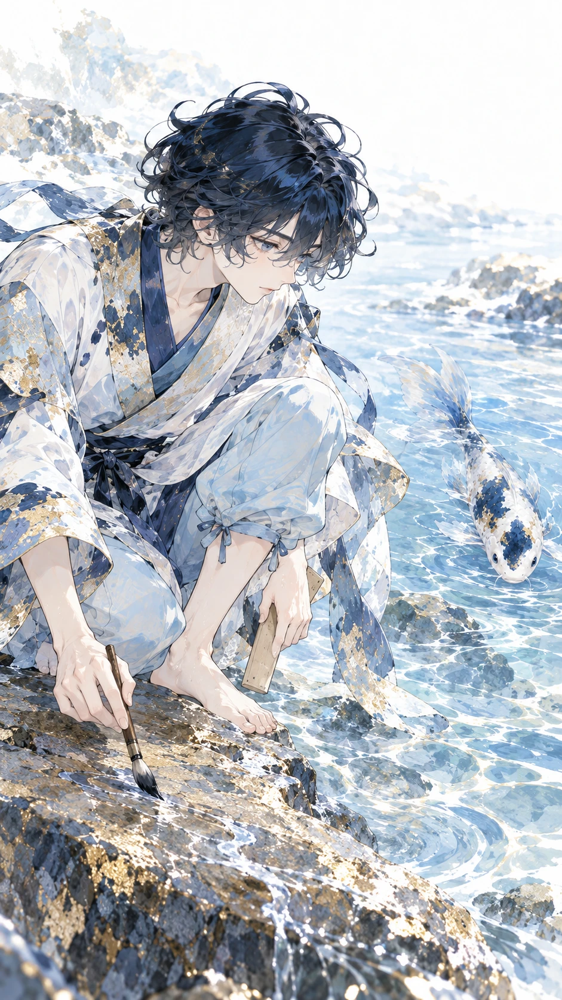
畫面描述｜中文
青序蹲在金石旁側身凝視弧形水痕，筆與尺仍各一，神情從皺眉轉好奇，墨游在水中遠一點。
Frame description｜English
Crouched beside the rock, Qingxu studies the curved wet trace in profile, still holding one brush and one ruler, curiosity replacing his frown; Moyu is farther along in the water.
Video Caption｜中文
原來還有別的方向
Video Caption｜English
There is another direction.
圖像提示詞｜中文｜9:16
9:16直式，單一動畫分鏡，中近景。藍白金箔感流動繪畫，深靛藍點綴、可見不透明筆觸、曲線、大量乾淨留白。畫面：青序蹲在金石旁側身凝視弧形水痕，筆與尺仍各一，神情從皺眉轉好奇，墨游在水中遠一點。角色一致性：青年繪圖師青序，20歲、168公分、約7頭身，靛藍短捲髮、藍灰眼，紙白交領層疊短袍、少量藍金筆觸花紋與飄帶、靛藍窄腰帶、淡藍寬褲捲至小腿、赤腳。右手使用一支木柄深藍毛筆，左手原持一把無字直尺，放下後不再拿起。 藍白錦鯉墨游，全長50公分、正常魚身比例，白底，頭頂一塊靛藍斑、左側腹一大塊靛藍斑、尾柄一圈靛藍斑；少量金色碎斑、淡藍流動長鰭，正常雙胸鰭與單尾鰭，無腳、無翅膀，始終在水中。角色設定/character_human.png 與角色設定/character_animal.png 固定造型，角色設定/character_scale.png 固定體型。只載入本鏡頭有出現的角色參考，無角色的物件特寫不加入角色。以本鏡頭指定的衣物與道具階段為準；不把完成後的狀態提早出現。不加文字、字幕、標誌、水印、第三個角色；不畫拼貼、分格或角色轉身表。不改臉型、髮型、衣色、動物花紋與比例；不增加肢體或道具。
Image prompt｜English｜9:16
Vertical 9:16, ONE animation storyboard frame, Medium close-up. STYLE: Lyrical blue-and-white fantasy illustration, selective deep indigo and mottled gold-leaf-like accents, visible opaque-paint brushwork and irregular color layers, flowing curves, generous clean negative space, airy and quiet. FRAME: Crouched beside the rock, Qingxu studies the curved wet trace in profile, still holding one brush and one ruler, curiosity replacing his frown; Moyu is farther along in the water. CHARACTER LOCK: Qingxu, a 20-year-old male mapmaker, 168 cm, seven-head proportions; short indigo curly hair, blue-gray eyes, paper-white layered crossover short robe with sparse blue-gold brush patterns and flowing fabric strips, narrow indigo sash, light-blue trousers rolled to mid-calf, bare feet. One wooden dark-bristled brush in his right hand; one unmarked ruler initially in his left, laid down permanently during the story. Moyu, a blue-and-white koi, total length 50 cm with natural fish proportions; white body, one indigo crown patch, one large indigo left-flank patch, indigo tail-base band, sparse gold flecks and flowing pale-blue fish fins. Normal paired pectoral fins and one tail fin, no legs or wings; always submerged in water. Use character_human.png and character_animal.png for exact designs, character_scale.png for size. Load only the character references visible in this shot; do not add characters to object-only close-ups. The specific shot state takes priority: do not introduce later wardrobe or prop states early. No text, captions, logos, watermarks, extra characters, collage, panels or turnaround. No redesign, scale drift, extra limbs, duplicated props or photographic rendering.
影片提示詞｜中文｜5秒｜9:16
5秒，9:16，以上述分鏡圖為唯一首幀。藍白金箔感流動繪畫，深靛藍點綴、可見不透明筆觸、曲線、大量乾淨留白。青序蹲在金石旁側身凝視弧形水痕，筆與尺仍各一，神情從皺眉轉好奇，墨游在水中遠一點。動作與運鏡：緩推近他的側臉，視線跟著水痕移動，手中道具不增減。保持原圖角色、體型、場景位置與道具狀態，運動自然且小幅；最後0.5秒穩定收住。不要切鏡、變形、閃爍、憑空新增物件或生成文字；字幕於剪輯時另疊。
Video prompt｜English｜5 seconds｜9:16
5 seconds, vertical 9:16. Use the matching storyboard image as the sole first frame. Lyrical blue-and-white fantasy illustration, selective deep indigo and mottled gold-leaf-like accents, visible opaque-paint brushwork and irregular color layers, flowing curves, generous clean negative space, airy and quiet. Crouched beside the rock, Qingxu studies the curved wet trace in profile, still holding one brush and one ruler, curiosity replacing his frown; Moyu is farther along in the water. MOTION AND CAMERA: Slow push toward his profile as his gaze follows the water trace; props remain unchanged. Preserve the supplied designs, body scale, scene geography and prop state; small natural movement, settle for the final 0.5 second. No cuts, morphing, flicker, invented objects or generated text. Add captions during editing.
Close-up｜The Ruler Rests｜25–30 秒（5 秒）
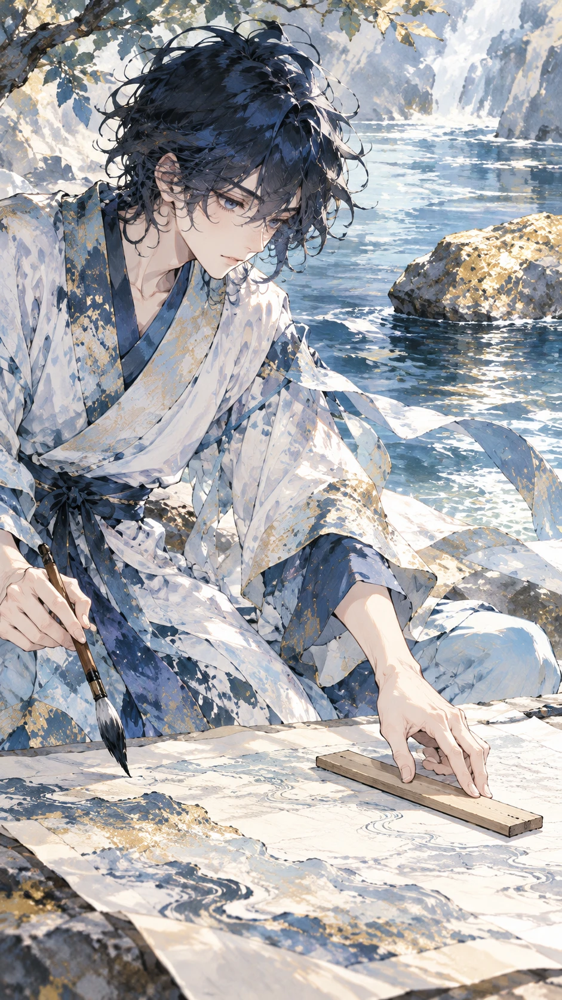
畫面描述｜中文
青序左手把唯一無字直尺平放在岸邊白紙上，右手仍拿木筆；河與金石只是背景，不見魚。
Frame description｜English
Qingxu's left hand places the one unmarked ruler flat on the paper bank while his right retains the wooden brush; river and rock behind, no fish visible.
Video Caption｜中文
先把直線輕輕放下
Video Caption｜English
Let the straight line rest.
圖像提示詞｜中文｜9:16
9:16直式，單一動畫分鏡，特寫。藍白金箔感流動繪畫，深靛藍點綴、可見不透明筆觸、曲線、大量乾淨留白。畫面：青序左手把唯一無字直尺平放在岸邊白紙上，右手仍拿木筆；河與金石只是背景，不見魚。角色一致性：青年繪圖師青序，20歲、168公分、約7頭身，靛藍短捲髮、藍灰眼，紙白交領層疊短袍、少量藍金筆觸花紋與飄帶、靛藍窄腰帶、淡藍寬褲捲至小腿、赤腳。右手使用一支木柄深藍毛筆，左手原持一把無字直尺，放下後不再拿起。 角色設定/character_human.png 與角色設定/character_animal.png 固定造型，角色設定/character_scale.png 固定體型。只載入本鏡頭有出現的角色參考，無角色的物件特寫不加入角色。以本鏡頭指定的衣物與道具階段為準；不把完成後的狀態提早出現。不加文字、字幕、標誌、水印、第三個角色；不畫拼貼、分格或角色轉身表。不改臉型、髮型、衣色、動物花紋與比例；不增加肢體或道具。
Image prompt｜English｜9:16
Vertical 9:16, ONE animation storyboard frame, Close-up. STYLE: Lyrical blue-and-white fantasy illustration, selective deep indigo and mottled gold-leaf-like accents, visible opaque-paint brushwork and irregular color layers, flowing curves, generous clean negative space, airy and quiet. FRAME: Qingxu's left hand places the one unmarked ruler flat on the paper bank while his right retains the wooden brush; river and rock behind, no fish visible. CHARACTER LOCK: Qingxu, a 20-year-old male mapmaker, 168 cm, seven-head proportions; short indigo curly hair, blue-gray eyes, paper-white layered crossover short robe with sparse blue-gold brush patterns and flowing fabric strips, narrow indigo sash, light-blue trousers rolled to mid-calf, bare feet. One wooden dark-bristled brush in his right hand; one unmarked ruler initially in his left, laid down permanently during the story. Use character_human.png and character_animal.png for exact designs, character_scale.png for size. Load only the character references visible in this shot; do not add characters to object-only close-ups. The specific shot state takes priority: do not introduce later wardrobe or prop states early. No text, captions, logos, watermarks, extra characters, collage, panels or turnaround. No redesign, scale drift, extra limbs, duplicated props or photographic rendering.
影片提示詞｜中文｜5秒｜9:16
5秒，9:16，以上述分鏡圖為唯一首幀。藍白金箔感流動繪畫，深靛藍點綴、可見不透明筆觸、曲線、大量乾淨留白。青序左手把唯一無字直尺平放在岸邊白紙上，右手仍拿木筆；河與金石只是背景，不見魚。動作與運鏡：固定鏡位，左手鬆開直尺後撤離，直尺全片後續留在此岸。保持原圖角色、體型、場景位置與道具狀態，運動自然且小幅；最後0.5秒穩定收住。不要切鏡、變形、閃爍、憑空新增物件或生成文字；字幕於剪輯時另疊。
Video prompt｜English｜5 seconds｜9:16
5 seconds, vertical 9:16. Use the matching storyboard image as the sole first frame. Lyrical blue-and-white fantasy illustration, selective deep indigo and mottled gold-leaf-like accents, visible opaque-paint brushwork and irregular color layers, flowing curves, generous clean negative space, airy and quiet. Qingxu's left hand places the one unmarked ruler flat on the paper bank while his right retains the wooden brush; river and rock behind, no fish visible. MOTION AND CAMERA: Locked shot: his left hand releases and withdraws; the ruler stays on this bank for the rest of the film. Preserve the supplied designs, body scale, scene geography and prop state; small natural movement, settle for the final 0.5 second. No cuts, morphing, flicker, invented objects or generated text. Add captions during editing.
Overhead medium close-up｜Following the Water｜30–35 秒（5 秒）
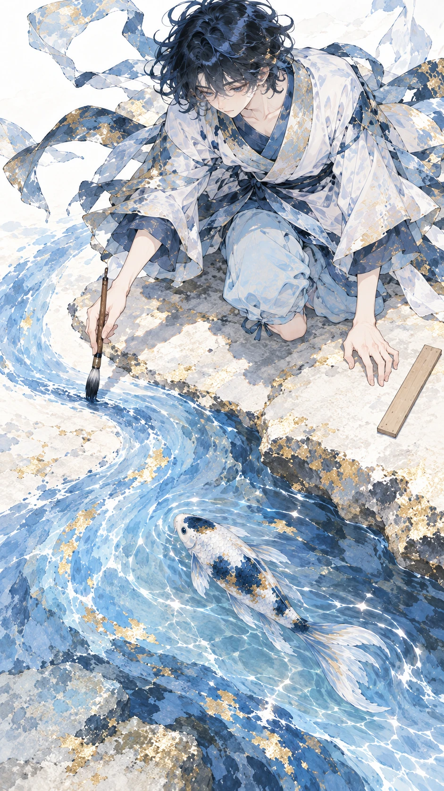
畫面描述｜中文
俯視右手筆尖在岩石左邊畫出繞行弧形淺藍河道，直尺遠在原岸，墨游於新河水前端游動。
Frame description｜English
Overhead, the right-hand brush draws a curved shallow-blue river around the rock's left; the ruler lies on the original bank, Moyu swimming at the new water's leading edge.
Video Caption｜中文
讓手跟著河流呼吸
Video Caption｜English
Let my hand follow the river.
圖像提示詞｜中文｜9:16
9:16直式，單一動畫分鏡，俯拍近景。藍白金箔感流動繪畫，深靛藍點綴、可見不透明筆觸、曲線、大量乾淨留白。畫面：俯視右手筆尖在岩石左邊畫出繞行弧形淺藍河道，直尺遠在原岸，墨游於新河水前端游動。角色一致性：青年繪圖師青序，20歲、168公分、約7頭身，靛藍短捲髮、藍灰眼，紙白交領層疊短袍、少量藍金筆觸花紋與飄帶、靛藍窄腰帶、淡藍寬褲捲至小腿、赤腳。右手使用一支木柄深藍毛筆，左手原持一把無字直尺，放下後不再拿起。 藍白錦鯉墨游，全長50公分、正常魚身比例，白底，頭頂一塊靛藍斑、左側腹一大塊靛藍斑、尾柄一圈靛藍斑；少量金色碎斑、淡藍流動長鰭，正常雙胸鰭與單尾鰭，無腳、無翅膀，始終在水中。角色設定/character_human.png 與角色設定/character_animal.png 固定造型，角色設定/character_scale.png 固定體型。只載入本鏡頭有出現的角色參考，無角色的物件特寫不加入角色。以本鏡頭指定的衣物與道具階段為準；不把完成後的狀態提早出現。不加文字、字幕、標誌、水印、第三個角色；不畫拼貼、分格或角色轉身表。不改臉型、髮型、衣色、動物花紋與比例；不增加肢體或道具。
Image prompt｜English｜9:16
Vertical 9:16, ONE animation storyboard frame, Overhead medium close-up. STYLE: Lyrical blue-and-white fantasy illustration, selective deep indigo and mottled gold-leaf-like accents, visible opaque-paint brushwork and irregular color layers, flowing curves, generous clean negative space, airy and quiet. FRAME: Overhead, the right-hand brush draws a curved shallow-blue river around the rock's left; the ruler lies on the original bank, Moyu swimming at the new water's leading edge. CHARACTER LOCK: Qingxu, a 20-year-old male mapmaker, 168 cm, seven-head proportions; short indigo curly hair, blue-gray eyes, paper-white layered crossover short robe with sparse blue-gold brush patterns and flowing fabric strips, narrow indigo sash, light-blue trousers rolled to mid-calf, bare feet. One wooden dark-bristled brush in his right hand; one unmarked ruler initially in his left, laid down permanently during the story. Moyu, a blue-and-white koi, total length 50 cm with natural fish proportions; white body, one indigo crown patch, one large indigo left-flank patch, indigo tail-base band, sparse gold flecks and flowing pale-blue fish fins. Normal paired pectoral fins and one tail fin, no legs or wings; always submerged in water. Use character_human.png and character_animal.png for exact designs, character_scale.png for size. Load only the character references visible in this shot; do not add characters to object-only close-ups. The specific shot state takes priority: do not introduce later wardrobe or prop states early. No text, captions, logos, watermarks, extra characters, collage, panels or turnaround. No redesign, scale drift, extra limbs, duplicated props or photographic rendering.
影片提示詞｜中文｜5秒｜9:16
5秒，9:16，以上述分鏡圖為唯一首幀。藍白金箔感流動繪畫，深靛藍點綴、可見不透明筆觸、曲線、大量乾淨留白。俯視右手筆尖在岩石左邊畫出繞行弧形淺藍河道，直尺遠在原岸，墨游於新河水前端游動。動作與運鏡：俯拍慢跟筆尖一段短弧，新增水道與舊水連通，魚始終浸水。保持原圖角色、體型、場景位置與道具狀態，運動自然且小幅；最後0.5秒穩定收住。不要切鏡、變形、閃爍、憑空新增物件或生成文字；字幕於剪輯時另疊。
Video prompt｜English｜5 seconds｜9:16
5 seconds, vertical 9:16. Use the matching storyboard image as the sole first frame. Lyrical blue-and-white fantasy illustration, selective deep indigo and mottled gold-leaf-like accents, visible opaque-paint brushwork and irregular color layers, flowing curves, generous clean negative space, airy and quiet. Overhead, the right-hand brush draws a curved shallow-blue river around the rock's left; the ruler lies on the original bank, Moyu swimming at the new water's leading edge. MOTION AND CAMERA: Track the brush along one short arc, connecting new water to the old; the fish stays submerged. Preserve the supplied designs, body scale, scene geography and prop state; small natural movement, settle for the final 0.5 second. No cuts, morphing, flicker, invented objects or generated text. Add captions during editing.
Medium shot｜A Rock Becomes an Island｜35–40 秒（5 秒）
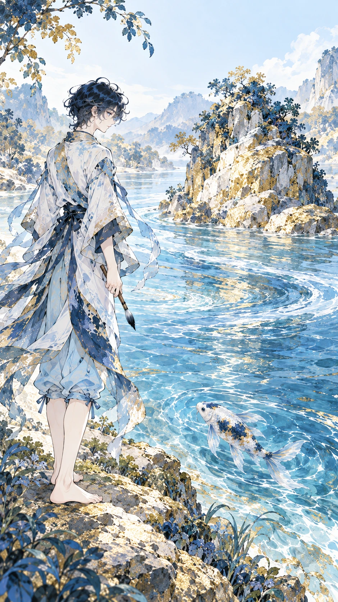
畫面描述｜中文
河道已繞金石形成寬弧，金石成為小島；青序站在原岸，只持一支筆，墨游在彎道水中。
Frame description｜English
The river now bends widely around the golden rock, turning it into an island; Qingxu stands on the original bank holding only his brush, Moyu in the bend.
Video Caption｜中文
攔路的成了新風景
Video Caption｜English
An obstacle becomes a view.
圖像提示詞｜中文｜9:16
9:16直式，單一動畫分鏡，中景。藍白金箔感流動繪畫，深靛藍點綴、可見不透明筆觸、曲線、大量乾淨留白。畫面：河道已繞金石形成寬弧，金石成為小島；青序站在原岸，只持一支筆，墨游在彎道水中。角色一致性：青年繪圖師青序，20歲、168公分、約7頭身，靛藍短捲髮、藍灰眼，紙白交領層疊短袍、少量藍金筆觸花紋與飄帶、靛藍窄腰帶、淡藍寬褲捲至小腿、赤腳。右手使用一支木柄深藍毛筆，左手原持一把無字直尺，放下後不再拿起。 藍白錦鯉墨游，全長50公分、正常魚身比例，白底，頭頂一塊靛藍斑、左側腹一大塊靛藍斑、尾柄一圈靛藍斑；少量金色碎斑、淡藍流動長鰭，正常雙胸鰭與單尾鰭，無腳、無翅膀，始終在水中。角色設定/character_human.png 與角色設定/character_animal.png 固定造型，角色設定/character_scale.png 固定體型。只載入本鏡頭有出現的角色參考，無角色的物件特寫不加入角色。以本鏡頭指定的衣物與道具階段為準；不把完成後的狀態提早出現。不加文字、字幕、標誌、水印、第三個角色；不畫拼貼、分格或角色轉身表。不改臉型、髮型、衣色、動物花紋與比例；不增加肢體或道具。
Image prompt｜English｜9:16
Vertical 9:16, ONE animation storyboard frame, Medium shot. STYLE: Lyrical blue-and-white fantasy illustration, selective deep indigo and mottled gold-leaf-like accents, visible opaque-paint brushwork and irregular color layers, flowing curves, generous clean negative space, airy and quiet. FRAME: The river now bends widely around the golden rock, turning it into an island; Qingxu stands on the original bank holding only his brush, Moyu in the bend. CHARACTER LOCK: Qingxu, a 20-year-old male mapmaker, 168 cm, seven-head proportions; short indigo curly hair, blue-gray eyes, paper-white layered crossover short robe with sparse blue-gold brush patterns and flowing fabric strips, narrow indigo sash, light-blue trousers rolled to mid-calf, bare feet. One wooden dark-bristled brush in his right hand; one unmarked ruler initially in his left, laid down permanently during the story. Moyu, a blue-and-white koi, total length 50 cm with natural fish proportions; white body, one indigo crown patch, one large indigo left-flank patch, indigo tail-base band, sparse gold flecks and flowing pale-blue fish fins. Normal paired pectoral fins and one tail fin, no legs or wings; always submerged in water. Use character_human.png and character_animal.png for exact designs, character_scale.png for size. Load only the character references visible in this shot; do not add characters to object-only close-ups. The specific shot state takes priority: do not introduce later wardrobe or prop states early. No text, captions, logos, watermarks, extra characters, collage, panels or turnaround. No redesign, scale drift, extra limbs, duplicated props or photographic rendering.
影片提示詞｜中文｜5秒｜9:16
5秒，9:16，以上述分鏡圖為唯一首幀。藍白金箔感流動繪畫，深靛藍點綴、可見不透明筆觸、曲線、大量乾淨留白。河道已繞金石形成寬弧，金石成為小島；青序站在原岸，只持一支筆，墨游在彎道水中。動作與運鏡：側向輕移，水沿彎道流，魚繞石一小段，人物留在岸上。保持原圖角色、體型、場景位置與道具狀態，運動自然且小幅；最後0.5秒穩定收住。不要切鏡、變形、閃爍、憑空新增物件或生成文字；字幕於剪輯時另疊。
Video prompt｜English｜5 seconds｜9:16
5 seconds, vertical 9:16. Use the matching storyboard image as the sole first frame. Lyrical blue-and-white fantasy illustration, selective deep indigo and mottled gold-leaf-like accents, visible opaque-paint brushwork and irregular color layers, flowing curves, generous clean negative space, airy and quiet. The river now bends widely around the golden rock, turning it into an island; Qingxu stands on the original bank holding only his brush, Moyu in the bend. MOTION AND CAMERA: Gentle lateral drift as water follows the bend and the koi swims a little around the rock; Qingxu stays on the bank. Preserve the supplied designs, body scale, scene geography and prop state; small natural movement, settle for the final 0.5 second. No cuts, morphing, flicker, invented objects or generated text. Add captions during editing.
Low-angle full shot｜Into the New Bend｜40–45 秒（5 秒）
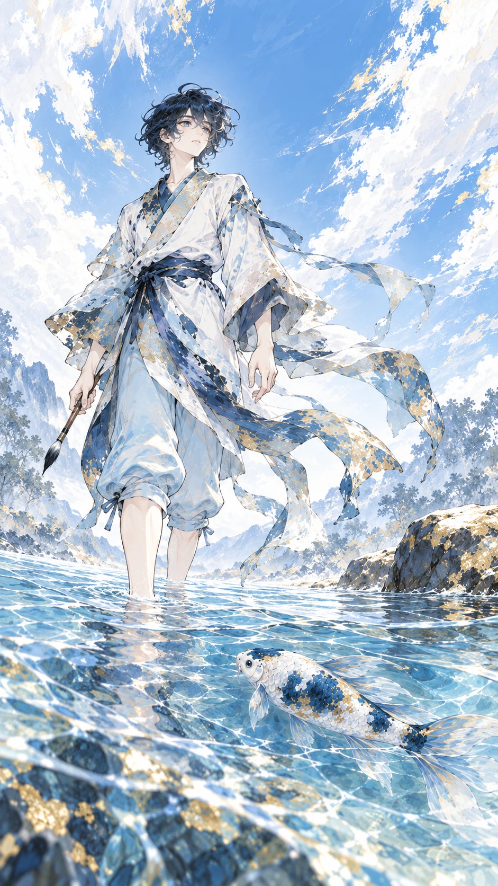
畫面描述｜中文
青序赤腳在淺至腳踝的河灣邊試探一步，右手筆垂低；墨游在他身旁稍深處，遠岸仍見放下的尺。
Frame description｜English
Barefoot, Qingxu tests one step into ankle-deep water at the bend, brush lowered in his right hand; Moyu swims in slightly deeper water beside him, the ruler still on the distant original bank.
Video Caption｜中文
轉彎也能走得很遠
Video Caption｜English
A bend can carry us far.
圖像提示詞｜中文｜9:16
9:16直式，單一動畫分鏡，低角全景。藍白金箔感流動繪畫，深靛藍點綴、可見不透明筆觸、曲線、大量乾淨留白。畫面：青序赤腳在淺至腳踝的河灣邊試探一步，右手筆垂低；墨游在他身旁稍深處，遠岸仍見放下的尺。角色一致性：青年繪圖師青序，20歲、168公分、約7頭身，靛藍短捲髮、藍灰眼，紙白交領層疊短袍、少量藍金筆觸花紋與飄帶、靛藍窄腰帶、淡藍寬褲捲至小腿、赤腳。右手使用一支木柄深藍毛筆，左手原持一把無字直尺，放下後不再拿起。 藍白錦鯉墨游，全長50公分、正常魚身比例，白底，頭頂一塊靛藍斑、左側腹一大塊靛藍斑、尾柄一圈靛藍斑；少量金色碎斑、淡藍流動長鰭，正常雙胸鰭與單尾鰭，無腳、無翅膀，始終在水中。角色設定/character_human.png 與角色設定/character_animal.png 固定造型，角色設定/character_scale.png 固定體型。只載入本鏡頭有出現的角色參考，無角色的物件特寫不加入角色。以本鏡頭指定的衣物與道具階段為準；不把完成後的狀態提早出現。不加文字、字幕、標誌、水印、第三個角色；不畫拼貼、分格或角色轉身表。不改臉型、髮型、衣色、動物花紋與比例；不增加肢體或道具。
Image prompt｜English｜9:16
Vertical 9:16, ONE animation storyboard frame, Low-angle full shot. STYLE: Lyrical blue-and-white fantasy illustration, selective deep indigo and mottled gold-leaf-like accents, visible opaque-paint brushwork and irregular color layers, flowing curves, generous clean negative space, airy and quiet. FRAME: Barefoot, Qingxu tests one step into ankle-deep water at the bend, brush lowered in his right hand; Moyu swims in slightly deeper water beside him, the ruler still on the distant original bank. CHARACTER LOCK: Qingxu, a 20-year-old male mapmaker, 168 cm, seven-head proportions; short indigo curly hair, blue-gray eyes, paper-white layered crossover short robe with sparse blue-gold brush patterns and flowing fabric strips, narrow indigo sash, light-blue trousers rolled to mid-calf, bare feet. One wooden dark-bristled brush in his right hand; one unmarked ruler initially in his left, laid down permanently during the story. Moyu, a blue-and-white koi, total length 50 cm with natural fish proportions; white body, one indigo crown patch, one large indigo left-flank patch, indigo tail-base band, sparse gold flecks and flowing pale-blue fish fins. Normal paired pectoral fins and one tail fin, no legs or wings; always submerged in water. Use character_human.png and character_animal.png for exact designs, character_scale.png for size. Load only the character references visible in this shot; do not add characters to object-only close-ups. The specific shot state takes priority: do not introduce later wardrobe or prop states early. No text, captions, logos, watermarks, extra characters, collage, panels or turnaround. No redesign, scale drift, extra limbs, duplicated props or photographic rendering.
影片提示詞｜中文｜5秒｜9:16
5秒，9:16，以上述分鏡圖為唯一首幀。藍白金箔感流動繪畫，深靛藍點綴、可見不透明筆觸、曲線、大量乾淨留白。青序赤腳在淺至腳踝的河灣邊試探一步，右手筆垂低；墨游在他身旁稍深處，遠岸仍見放下的尺。動作與運鏡：低位緩跟一隻腳踏入淺水，細小漣漪擴開，魚慢游不碰腳。保持原圖角色、體型、場景位置與道具狀態，運動自然且小幅；最後0.5秒穩定收住。不要切鏡、變形、閃爍、憑空新增物件或生成文字；字幕於剪輯時另疊。
Video prompt｜English｜5 seconds｜9:16
5 seconds, vertical 9:16. Use the matching storyboard image as the sole first frame. Lyrical blue-and-white fantasy illustration, selective deep indigo and mottled gold-leaf-like accents, visible opaque-paint brushwork and irregular color layers, flowing curves, generous clean negative space, airy and quiet. Barefoot, Qingxu tests one step into ankle-deep water at the bend, brush lowered in his right hand; Moyu swims in slightly deeper water beside him, the ruler still on the distant original bank. MOTION AND CAMERA: Low follow as one foot enters the shallows, small ripples spreading; the koi swims slowly clear of his foot. Preserve the supplied designs, body scale, scene geography and prop state; small natural movement, settle for the final 0.5 second. No cuts, morphing, flicker, invented objects or generated text. Add captions during editing.
Wide shot｜Space for the Distance｜45–50 秒（5 秒）
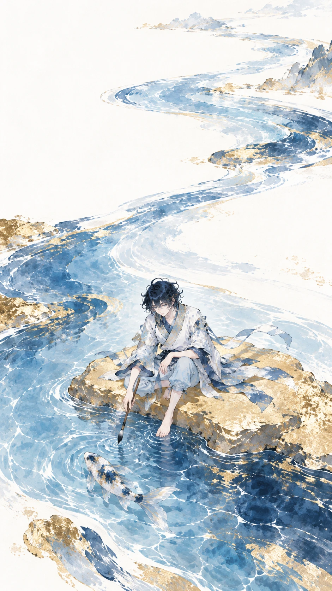
畫面描述｜中文
大量白紙留白中，曲河繞金島延向上方，青序與水中的墨游在畫面下方很小，筆仍唯一，無其他生物。
Frame description｜English
Amid generous paper-white space, the curved river winds around the golden island toward the top; tiny Qingxu and submerged Moyu sit low in the composition, one brush only, no other creatures.
Video Caption｜中文
遠方不只一種模樣
Video Caption｜English
Distance has more than one shape.
圖像提示詞｜中文｜9:16
9:16直式，單一動畫分鏡，遠景。藍白金箔感流動繪畫，深靛藍點綴、可見不透明筆觸、曲線、大量乾淨留白。畫面：大量白紙留白中，曲河繞金島延向上方，青序與水中的墨游在畫面下方很小，筆仍唯一，無其他生物。角色一致性：青年繪圖師青序，20歲、168公分、約7頭身，靛藍短捲髮、藍灰眼，紙白交領層疊短袍、少量藍金筆觸花紋與飄帶、靛藍窄腰帶、淡藍寬褲捲至小腿、赤腳。右手使用一支木柄深藍毛筆，左手原持一把無字直尺，放下後不再拿起。 藍白錦鯉墨游，全長50公分、正常魚身比例，白底，頭頂一塊靛藍斑、左側腹一大塊靛藍斑、尾柄一圈靛藍斑；少量金色碎斑、淡藍流動長鰭，正常雙胸鰭與單尾鰭，無腳、無翅膀，始終在水中。角色設定/character_human.png 與角色設定/character_animal.png 固定造型，角色設定/character_scale.png 固定體型。只載入本鏡頭有出現的角色參考，無角色的物件特寫不加入角色。以本鏡頭指定的衣物與道具階段為準；不把完成後的狀態提早出現。不加文字、字幕、標誌、水印、第三個角色；不畫拼貼、分格或角色轉身表。不改臉型、髮型、衣色、動物花紋與比例；不增加肢體或道具。
Image prompt｜English｜9:16
Vertical 9:16, ONE animation storyboard frame, Wide shot. STYLE: Lyrical blue-and-white fantasy illustration, selective deep indigo and mottled gold-leaf-like accents, visible opaque-paint brushwork and irregular color layers, flowing curves, generous clean negative space, airy and quiet. FRAME: Amid generous paper-white space, the curved river winds around the golden island toward the top; tiny Qingxu and submerged Moyu sit low in the composition, one brush only, no other creatures. CHARACTER LOCK: Qingxu, a 20-year-old male mapmaker, 168 cm, seven-head proportions; short indigo curly hair, blue-gray eyes, paper-white layered crossover short robe with sparse blue-gold brush patterns and flowing fabric strips, narrow indigo sash, light-blue trousers rolled to mid-calf, bare feet. One wooden dark-bristled brush in his right hand; one unmarked ruler initially in his left, laid down permanently during the story. Moyu, a blue-and-white koi, total length 50 cm with natural fish proportions; white body, one indigo crown patch, one large indigo left-flank patch, indigo tail-base band, sparse gold flecks and flowing pale-blue fish fins. Normal paired pectoral fins and one tail fin, no legs or wings; always submerged in water. Use character_human.png and character_animal.png for exact designs, character_scale.png for size. Load only the character references visible in this shot; do not add characters to object-only close-ups. The specific shot state takes priority: do not introduce later wardrobe or prop states early. No text, captions, logos, watermarks, extra characters, collage, panels or turnaround. No redesign, scale drift, extra limbs, duplicated props or photographic rendering.
影片提示詞｜中文｜5秒｜9:16
5秒，9:16，以上述分鏡圖為唯一首幀。藍白金箔感流動繪畫，深靛藍點綴、可見不透明筆觸、曲線、大量乾淨留白。大量白紙留白中，曲河繞金島延向上方，青序與水中的墨游在畫面下方很小，筆仍唯一，無其他生物。動作與運鏡：緩慢拉遠，曲河方向不變，人物與魚只做微小呼吸和尾動。保持原圖角色、體型、場景位置與道具狀態，運動自然且小幅；最後0.5秒穩定收住。不要切鏡、變形、閃爍、憑空新增物件或生成文字；字幕於剪輯時另疊。
Video prompt｜English｜5 seconds｜9:16
5 seconds, vertical 9:16. Use the matching storyboard image as the sole first frame. Lyrical blue-and-white fantasy illustration, selective deep indigo and mottled gold-leaf-like accents, visible opaque-paint brushwork and irregular color layers, flowing curves, generous clean negative space, airy and quiet. Amid generous paper-white space, the curved river winds around the golden island toward the top; tiny Qingxu and submerged Moyu sit low in the composition, one brush only, no other creatures. MOTION AND CAMERA: Slow pull-back, retaining the river's route; only subtle breathing and tail movement. Preserve the supplied designs, body scale, scene geography and prop state; small natural movement, settle for the final 0.5 second. No cuts, morphing, flicker, invented objects or generated text. Add captions during editing.
Medium close-up｜A Wider Heart｜50–55 秒（5 秒）
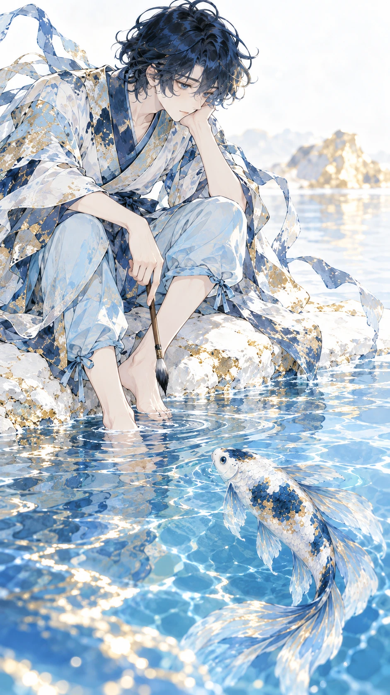
畫面描述｜中文
青序坐在金島對岸白色岸緣，筆平放膝上、雙腳近水；墨游在清藍水中靠近，兩者安靜對望。
Frame description｜English
Qingxu sits on the white bank opposite the golden island, brush across his knees and bare feet by the water; Moyu approaches beneath clear blue water as they regard each other quietly.
Video Caption｜中文
心鬆開路就慢慢寬
Video Caption｜English
A softer heart makes room.
圖像提示詞｜中文｜9:16
9:16直式，單一動畫分鏡，中近景。藍白金箔感流動繪畫，深靛藍點綴、可見不透明筆觸、曲線、大量乾淨留白。畫面：青序坐在金島對岸白色岸緣，筆平放膝上、雙腳近水；墨游在清藍水中靠近，兩者安靜對望。角色一致性：青年繪圖師青序，20歲、168公分、約7頭身，靛藍短捲髮、藍灰眼，紙白交領層疊短袍、少量藍金筆觸花紋與飄帶、靛藍窄腰帶、淡藍寬褲捲至小腿、赤腳。右手使用一支木柄深藍毛筆，左手原持一把無字直尺，放下後不再拿起。 藍白錦鯉墨游，全長50公分、正常魚身比例，白底，頭頂一塊靛藍斑、左側腹一大塊靛藍斑、尾柄一圈靛藍斑；少量金色碎斑、淡藍流動長鰭，正常雙胸鰭與單尾鰭，無腳、無翅膀，始終在水中。角色設定/character_human.png 與角色設定/character_animal.png 固定造型，角色設定/character_scale.png 固定體型。只載入本鏡頭有出現的角色參考，無角色的物件特寫不加入角色。以本鏡頭指定的衣物與道具階段為準；不把完成後的狀態提早出現。不加文字、字幕、標誌、水印、第三個角色；不畫拼貼、分格或角色轉身表。不改臉型、髮型、衣色、動物花紋與比例；不增加肢體或道具。
Image prompt｜English｜9:16
Vertical 9:16, ONE animation storyboard frame, Medium close-up. STYLE: Lyrical blue-and-white fantasy illustration, selective deep indigo and mottled gold-leaf-like accents, visible opaque-paint brushwork and irregular color layers, flowing curves, generous clean negative space, airy and quiet. FRAME: Qingxu sits on the white bank opposite the golden island, brush across his knees and bare feet by the water; Moyu approaches beneath clear blue water as they regard each other quietly. CHARACTER LOCK: Qingxu, a 20-year-old male mapmaker, 168 cm, seven-head proportions; short indigo curly hair, blue-gray eyes, paper-white layered crossover short robe with sparse blue-gold brush patterns and flowing fabric strips, narrow indigo sash, light-blue trousers rolled to mid-calf, bare feet. One wooden dark-bristled brush in his right hand; one unmarked ruler initially in his left, laid down permanently during the story. Moyu, a blue-and-white koi, total length 50 cm with natural fish proportions; white body, one indigo crown patch, one large indigo left-flank patch, indigo tail-base band, sparse gold flecks and flowing pale-blue fish fins. Normal paired pectoral fins and one tail fin, no legs or wings; always submerged in water. Use character_human.png and character_animal.png for exact designs, character_scale.png for size. Load only the character references visible in this shot; do not add characters to object-only close-ups. The specific shot state takes priority: do not introduce later wardrobe or prop states early. No text, captions, logos, watermarks, extra characters, collage, panels or turnaround. No redesign, scale drift, extra limbs, duplicated props or photographic rendering.
影片提示詞｜中文｜5秒｜9:16
5秒，9:16，以上述分鏡圖為唯一首幀。藍白金箔感流動繪畫，深靛藍點綴、可見不透明筆觸、曲線、大量乾淨留白。青序坐在金島對岸白色岸緣，筆平放膝上、雙腳近水；墨游在清藍水中靠近，兩者安靜對望。動作與運鏡：緩推近，魚游近半個身長停住，青年微笑，筆不變成尺。保持原圖角色、體型、場景位置與道具狀態，運動自然且小幅；最後0.5秒穩定收住。不要切鏡、變形、閃爍、憑空新增物件或生成文字；字幕於剪輯時另疊。
Video prompt｜English｜5 seconds｜9:16
5 seconds, vertical 9:16. Use the matching storyboard image as the sole first frame. Lyrical blue-and-white fantasy illustration, selective deep indigo and mottled gold-leaf-like accents, visible opaque-paint brushwork and irregular color layers, flowing curves, generous clean negative space, airy and quiet. Qingxu sits on the white bank opposite the golden island, brush across his knees and bare feet by the water; Moyu approaches beneath clear blue water as they regard each other quietly. MOTION AND CAMERA: Slow push-in as the koi approaches half a body length and pauses; he smiles, the brush stays a brush. Preserve the supplied designs, body scale, scene geography and prop state; small natural movement, settle for the final 0.5 second. No cuts, morphing, flicker, invented objects or generated text. Add captions during editing.
兩張海報另設前導與後記。需與全部十張分鏡比對場景、鏡位、姿態、動作及故事時刻，不能用首尾分鏡加字代替。兩張海報只包含相同的四段中英文片名及副標題。片尾採明亮、希望與安定的結局。
時間：00–05 秒。極高空垂直俯瞰尚未畫河的白紙原：青序小小地趴在畫面左下，雙掌平放紙面、雙腳輕翹，從上方只見捲髮頭頂；右下是一個獨立淺藍橢圓小水池，墨游完全在水中。毛筆與無字尺放在身邊，尚未動筆。大面積乾淨留白，沒有河流、金石、山谷、拱洞或托腮坐姿。
海報圖像提示詞｜中文｜9:16
9:16直式獨立片頭海報。藍白金箔感流動繪畫，深靛藍點綴、可見不透明筆觸、曲線、大量乾淨留白。極高空垂直俯瞰尚未畫河的白紙原：青序小小地趴在畫面左下，雙掌平放紙面、雙腳輕翹，從上方只見捲髮頭頂；右下是一個獨立淺藍橢圓小水池，墨游完全在水中。毛筆與無字尺放在身邊，尚未動筆。大面積乾淨留白，沒有河流、金石、山谷、拱洞或托腮坐姿。人物、動物造型嚴格依本片角色四視圖與共同體型表。上方30%排版只出現四段文字，各一次：河流不走直線／Rivers Find Their Way／轉個彎，也能走向遠方／A bend can still lead you onward.。文字逐字正確，不加其他文字、標誌或字幕。
Poster image prompt｜English｜9:16
9:16 portrait standalone prologue poster. Lyrical blue-and-white fantasy illustration, selective deep indigo and mottled gold-leaf-like accents, visible opaque-paint brushwork and irregular color layers, flowing curves, generous clean negative space, airy and quiet. Very high straight-down overhead view of the unpainted white paper plain. Tiny Qingxu lies flat on his stomach in the lower-left, palms flat and feet playfully bent upward, only the top of his curly head visible. At lower-right, Moyu is fully submerged in one isolated pale-blue oval pool. Brush and unmarked ruler lie untouched beside him. Vast clean negative space; no river, golden rock, valley, arch or seated chin-on-hand pose. Strictly match the character and shared scale sheets. Upper30% typography: only these four blocks, exactly once each: 河流不走直線 / Rivers Find Their Way / 轉個彎，也能走向遠方 / A bend can still lead you onward.. Accurate Traditional Chinese and English, no additional text or credits.
影片提示詞｜中文｜5秒｜9:16
5秒，9:16，以海報/poster_opening.png為唯一首幀。藍白金箔感流動繪畫，深靛藍點綴、可見不透明筆觸、曲線、大量乾淨留白。極高空垂直俯瞰尚未畫河的白紙原：青序小小地趴在畫面左下，雙掌平放紙面、雙腳輕翹，從上方只見捲髮頭頂；右下是一個獨立淺藍橢圓小水池，墨游完全在水中。毛筆與無字尺放在身邊，尚未動筆。大面積乾淨留白，沒有河流、金石、山谷、拱洞或托腮坐姿。動作：固定極高俯拍，池面微漣、錦鯉在水中擺尾半個身長，青年翹起的雙腳輕擺一次；雙掌不離紙面，尚未開始畫河。四段中英文標題與副標題固定於畫面原位置，字形、內容、可讀性全程不變；保持角色與體型、道具狀態，最後0.5秒收住。不切換正片分鏡、不變形或新增物件。若工具無法鎖字，先製作無字動態底片，再於剪輯疊回相同四段文字。
Video prompt｜English｜5 seconds｜9:16
5 seconds, vertical9:16, poster_opening.png as sole first frame. Lyrical blue-and-white fantasy illustration, selective deep indigo and mottled gold-leaf-like accents, visible opaque-paint brushwork and irregular color layers, flowing curves, generous clean negative space, airy and quiet. Very high straight-down overhead view of the unpainted white paper plain. Tiny Qingxu lies flat on his stomach in the lower-left, palms flat and feet playfully bent upward, only the top of his curly head visible. At lower-right, Moyu is fully submerged in one isolated pale-blue oval pool. Brush and unmarked ruler lie untouched beside him. Vast clean negative space; no river, golden rock, valley, arch or seated chin-on-hand pose. Motion: Locked very high overhead camera; faint pool ripples and half a body length of underwater koi movement, the young man lightly sways his raised feet once. His palms stay flat; he does not start drawing. Lock all four title/subtitle blocks at their original screen positions with exact glyphs, wording and readability. Preserve designs, scale and props; settle for final0.5 second. No cuts to storyboard, morphing or added objects. If text cannot be locked, animate a text-free plate and overlay the same four blocks in editing.
時間：55–60 秒。下游白紙拱洞內向外看的低角度遠景：曲河從洞中流向開闊白光，青序站在淺水岸側、右手筆低垂，墨游在前方水中。原來金石與直尺都不在此處；少量金色筆觸只在拱洞邊緣，迎向新的空間。
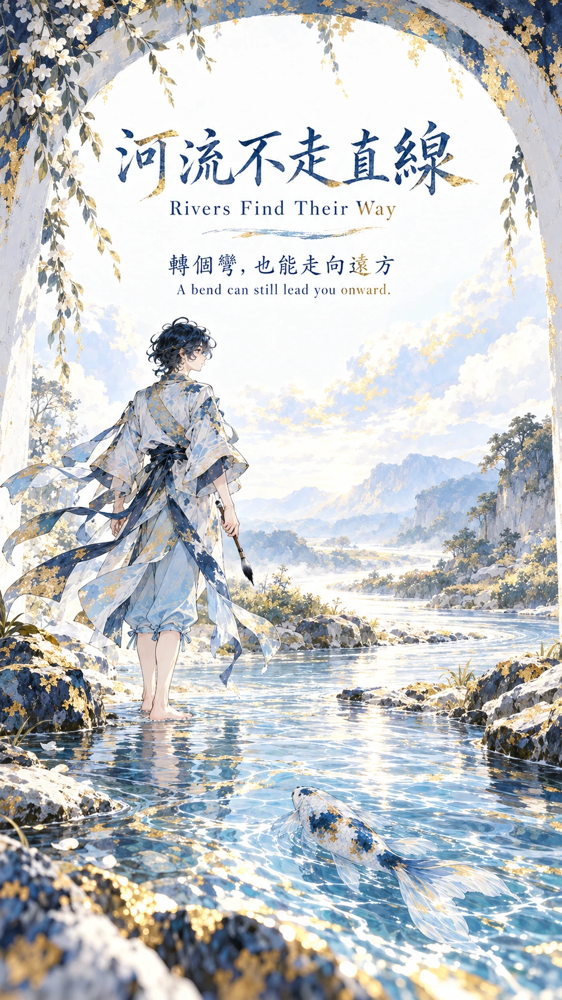
海報圖像提示詞｜中文｜9:16
9:16直式獨立片尾後記海報，不能從十張分鏡改字重用。藍白金箔感流動繪畫，深靛藍點綴、可見不透明筆觸、曲線、大量乾淨留白。下游白紙拱洞內向外看的低角度遠景：曲河從洞中流向開闊白光，青序站在淺水岸側、右手筆低垂，墨游在前方水中。原來金石與直尺都不在此處；少量金色筆觸只在拱洞邊緣，迎向新的空間。角色鎖定：青年繪圖師青序，20歲、168公分、約7頭身，靛藍短捲髮、藍灰眼，紙白交領層疊短袍、少量藍金筆觸花紋與飄帶、靛藍窄腰帶、淡藍寬褲捲至小腿、赤腳。右手使用一支木柄深藍毛筆，左手原持一把無字直尺，放下後不再拿起。藍白錦鯉墨游，全長50公分、正常魚身比例，白底，頭頂一塊靛藍斑、左側腹一大塊靛藍斑、尾柄一圈靛藍斑；少量金色碎斑、淡藍流動長鰭，正常雙胸鰭與單尾鰭，無腳、無翅膀，始終在水中。嚴格遵守本片四視圖與體型表；服裝、道具的前後狀態以此海報場景為準。上方約30%安排清楚排版、人物臉不被字遮住，四周保留安全邊界。海報只允許四段文字，各出現一次，逐字正確：中文大標題「河流不走直線」；英文大標題「Rivers Find Their Way」；中文副標題「轉個彎，也能走向遠方」；英文副標題「A bend can still lead you onward.」。中英文可分行，但不能改字、漏字，不能有其他文字或標誌。
Poster image prompt｜English｜9:16
Vertical 9:16 standalone EPILOGUE ending movie poster, distinct composition and story moment, never a retitled storyboard. Lyrical blue-and-white fantasy illustration, selective deep indigo and mottled gold-leaf-like accents, visible opaque-paint brushwork and irregular color layers, flowing curves, generous clean negative space, airy and quiet. SCENE: Epilogue downstream: low long shot from inside a white-paper arch looking outward. The curved river flows through the arch into an open bright expanse; Qingxu stands at its shallow edge with the brush lowered in his right hand, Moyu submerged ahead. The old golden rock and ruler are absent. Sparse gold paint at the arch rim, a hopeful new reach. Exact same character designs and size as supplied sheets. Qingxu, a 20-year-old male mapmaker, 168 cm, seven-head proportions; short indigo curly hair, blue-gray eyes, paper-white layered crossover short robe with sparse blue-gold brush patterns and flowing fabric strips, narrow indigo sash, light-blue trousers rolled to mid-calf, bare feet. One wooden dark-bristled brush in his right hand; one unmarked ruler initially in his left, laid down permanently during the story. Moyu, a blue-and-white koi, total length 50 cm with natural fish proportions; white body, one indigo crown patch, one large indigo left-flank patch, indigo tail-base band, sparse gold flecks and flowing pale-blue fish fins. Normal paired pectoral fins and one tail fin, no legs or wings; always submerged in water. The poster's explicitly stated temporal wardrobe and props override generic character timing. Reserve roughly upper 30% for elegant clear typography, safe margins, no text over faces. Render ONLY these FOUR text blocks, exactly once each, accurate Traditional Chinese and English; line breaks allowed, no other letters, symbols, credits or logos: "河流不走直線" / "Rivers Find Their Way" / "轉個彎，也能走向遠方" / "A bend can still lead you onward.".
影片提示詞｜中文｜5秒｜9:16
5秒，9:16，以海報/poster_ending.png為唯一首幀，獨立片尾影片。藍白金箔感流動繪畫，深靛藍點綴、可見不透明筆觸、曲線、大量乾淨留白。下游白紙拱洞內向外看的低角度遠景：曲河從洞中流向開闊白光，青序站在淺水岸側、右手筆低垂，墨游在前方水中。原來金石與直尺都不在此處；少量金色筆觸只在拱洞邊緣，迎向新的空間。運鏡與動作：緩向洞外推2%，錦鯉在水中往前半個身長、衣角輕動，拱洞固定不變形。四段中英文標題副標題固定在原位置，字形、內容與可讀性全程不變；只讓場景微動，不讓文字隨場景透視變形。保留角色造型比例與原有道具，最後0.5秒穩定。不要切換成任何正片分鏡，不新增文字或角色。若工具無法鎖字，先移除文字製作底片，再於剪輯以相同四段文字固定疊回。
Video prompt｜English｜5 seconds｜9:16
5 seconds, vertical 9:16. Use 海報/poster_ending.png as the only first frame for a separate ending epilogue clip. Lyrical blue-and-white fantasy illustration, selective deep indigo and mottled gold-leaf-like accents, visible opaque-paint brushwork and irregular color layers, flowing curves, generous clean negative space, airy and quiet. Epilogue downstream: low long shot from inside a white-paper arch looking outward. The curved river flows through the arch into an open bright expanse; Qingxu stands at its shallow edge with the brush lowered in his right hand, Moyu submerged ahead. The old golden rock and ruler are absent. Sparse gold paint at the arch rim, a hopeful new reach. MOTION: Slow 2% push toward the opening; koi swims half a body length underwater, tunic hem stirs, arch stays rigid. Lock all four Chinese/English title and subtitle blocks in their original screen positions, with exact glyphs and readability throughout; move only the scene, never warp text with perspective. Preserve character design, size and existing props; settle for the final 0.5 second. No cuts to storyboard shots, extra text or characters. If text cannot be locked, animate a text-free plate and overlay the same four blocks during editing.
中文｜16:9
16:9橫式，白色背景、均勻光線，獨立角色設定表；同一角色四個全身視角依序為正面、45度、正側面、背面，大小相同、基線一致，不裁切頭腳。青年繪圖師青序，20歲、168公分、約7頭身，靛藍短捲髮、藍灰眼，紙白交領層疊短袍、少量藍金筆觸花紋與飄帶、靛藍窄腰帶、淡藍寬褲捲至小腿、赤腳。右手使用一支木柄深藍毛筆，左手原持一把無字直尺，放下後不再拿起。藍白金箔感流動繪畫，深靛藍點綴、可見不透明筆觸、曲線、大量乾淨留白。只參考原圖風格，不複製原圖角色與構圖；不加文字、標籤或其他角色。
English｜16:9
16:9 landscape character turnaround, pure white background, even neutral light. Four full-body views in order: front, 45-degree three-quarter, strict side, back, consistent size and baseline, complete heads and feet. Qingxu, a 20-year-old male mapmaker, 168 cm, seven-head proportions; short indigo curly hair, blue-gray eyes, paper-white layered crossover short robe with sparse blue-gold brush patterns and flowing fabric strips, narrow indigo sash, light-blue trousers rolled to mid-calf, bare feet. One wooden dark-bristled brush in his right hand; one unmarked ruler initially in his left, laid down permanently during the story. Lyrical blue-and-white fantasy illustration, selective deep indigo and mottled gold-leaf-like accents, visible opaque-paint brushwork and irregular color layers, flowing curves, generous clean negative space, airy and quiet. Input artwork is style only, not a character or composition to copy. No text, labels or additional characters.
中文｜16:9
16:9橫式，白色背景、均勻光線，獨立角色設定表；同一角色四個全身視角依序為正面、45度、正側面、背面，大小相同、基線一致，不裁切頭腳。藍白錦鯉墨游，全長50公分、正常魚身比例，白底，頭頂一塊靛藍斑、左側腹一大塊靛藍斑、尾柄一圈靛藍斑；少量金色碎斑、淡藍流動長鰭，正常雙胸鰭與單尾鰭，無腳、無翅膀，始終在水中。藍白金箔感流動繪畫，深靛藍點綴、可見不透明筆觸、曲線、大量乾淨留白。只參考原圖風格，不複製原圖角色與構圖；不加文字、標籤或其他角色。
English｜16:9
16:9 landscape character turnaround, pure white background, even neutral light. Four full-body views in order: front, 45-degree three-quarter, strict side, back, consistent size and baseline, complete heads and feet. Moyu, a blue-and-white koi, total length 50 cm with natural fish proportions; white body, one indigo crown patch, one large indigo left-flank patch, indigo tail-base band, sparse gold flecks and flowing pale-blue fish fins. Normal paired pectoral fins and one tail fin, no legs or wings; always submerged in water. Lyrical blue-and-white fantasy illustration, selective deep indigo and mottled gold-leaf-like accents, visible opaque-paint brushwork and irregular color layers, flowing curves, generous clean negative space, airy and quiet. Input artwork is style only, not a character or composition to copy. No text, labels or additional characters.
中文｜16:9
16:9，純白背景、均勻光線，同一基線、同一空間尺度，只畫一個全身青序與一隻全身墨游並列。青年繪圖師青序，20歲、168公分、約7頭身，靛藍短捲髮、藍灰眼，紙白交領層疊短袍、少量藍金筆觸花紋與飄帶、靛藍窄腰帶、淡藍寬褲捲至小腿、赤腳。右手使用一支木柄深藍毛筆，左手原持一把無字直尺，放下後不再拿起。藍白錦鯉墨游，全長50公分、正常魚身比例，白底，頭頂一塊靛藍斑、左側腹一大塊靛藍斑、尾柄一圈靛藍斑；少量金色碎斑、淡藍流動長鰭，正常雙胸鰭與單尾鰭，無腳、無翅膀，始終在水中。造型依兩張角色四視圖；不為填滿版面放大動物。錦鯉另用無景物的透明淺水帶顯示水中姿態；其餘動物腳踏地。不加文字或網格。
English｜16:9
16:9 pure white shared size sheet, even light. One full-body 青序 and one 墨游, same spatial scale and common baseline. Qingxu, a 20-year-old male mapmaker, 168 cm, seven-head proportions; short indigo curly hair, blue-gray eyes, paper-white layered crossover short robe with sparse blue-gold brush patterns and flowing fabric strips, narrow indigo sash, light-blue trousers rolled to mid-calf, bare feet. One wooden dark-bristled brush in his right hand; one unmarked ruler initially in his left, laid down permanently during the story. Moyu, a blue-and-white koi, total length 50 cm with natural fish proportions; white body, one indigo crown patch, one large indigo left-flank patch, indigo tail-base band, sparse gold flecks and flowing pale-blue fish fins. Normal paired pectoral fins and one tail fin, no legs or wings; always submerged in water. Match individual turnarounds, never enlarge animal to fill page. Koi only: submerged horizontally in a transparent pale water band with no scenery; all other animals grounded. No lettering or grid.
實際送出圖像工具的提示詞與參考來源另存於 ../04至10製作資料/生成記錄/；本規格提供可獨立複用的中英文提示詞。